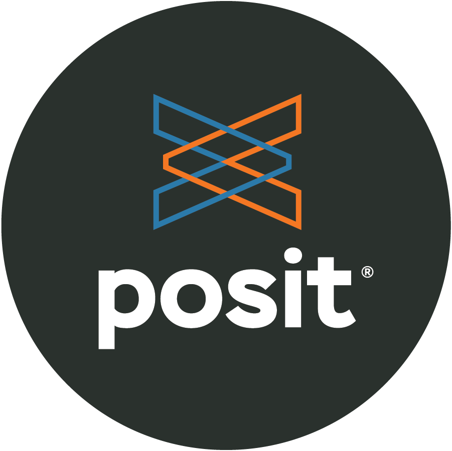
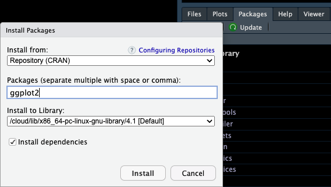

Posit Cloud ☁️
MATH/COSC 3570 Introduction to Data Science
Integrated Development Environment


R and Python are programming languages.
-
Posit Cloud offers two integrated development environments (IDE):
which are software for efficiently writing computer programs.
☁️ Posit Cloud - Data Science w/o hardware hassles
😎 Implement R/Python programs without installing R/Python and the IDE in your laptop!
😎 Posit Cloud lets you do, share and learn data science online for free!
😞 Get everything ready locally: Lots of friction
- Download and install R/Python
- Download and install IDE
- Install wanted R/Python packages:
- tidymodels
- tidyverse
- NumPy
- …
- Download and install tools like Git

Install Posit Cloud
- Step 1: In the Posit website https://posit.co/, choose Products > Posit Cloud as shown below.

Environment Tab
The (global) environment is where we are currently working.
Anything created or imported into the current R/Python session is stored in the environment and shown in the Environment tab.
-
After we run the R script, objects stored in the environment are
- Data set
mtcars - Object
xstoring integer values 1 to 10. - Object
ystoring three numeric values 3, 5, 9.
- Data set

Environment Tab
- After we run the Python script, the object stored in the environment is
- Object
bstoring a stringHello World!
- Object

R Packages 📦
- When we start a R session, only built-in packages like base, stats, graphics, etc are available.
- Installing packages is an easy way to get access to others data and functions.


 and more!
and more!
Installing R Packages 📦
- To install a package, for example, the ggplot2 package, we use the command
- In the right-bottom pane, Packages > Install

01-Running R Script
- Load R package ggplot2 into your Posit Cloud.
Create a R script named lab01-run-script.R in your 3570-project.
Copy and paste the code below into the script, and save it.
- Source the script. A pretty plot showing up?!